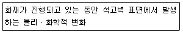
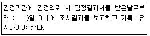
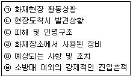
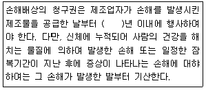

화재감식평가기사 (2019-04-27 기출문제)
1과목: 화재조사론
1. 다음에서 설명하는 용어로 적합한 것은?

- 박리(Spalling)
- 중합(Polymerization)
- 탄화(Carbonization)
- 하소(Calcination)
(정답률: 60%)

2. 벽의 두께 0.⑤m, 벽 양면의 온도는 각각 40℃와 20℃일 때 폴리우레탄 폼 벽체를 관통하는 단위면적당 열유동율은? (단, 열전도율 k=0.034 W/m이다.)
- 0.136 W/m2
- 1.36 W/m2
- 13.6 W/m2
- 136 W/m2
(정답률: 59%)
3. 화재 시 연기의 이동속도 및 특성에 대한 설명으로 옳지 않은 것은?
- 연기 층의 두께는 연소가 진행됨에 따라 달라진다.
- 화재실에서 분출된 연기는 공기보다 가벼워 통로의 상부를 따라 유동한다.
- 연기는 발화층으로부터 위층으로 확산된다.
- 일반적으로 연기의 이동속도는 수평이동 속도가 수직이동 속도보다 빠르다.
(정답률: 87%)
4. 다음 중 산화반응에 대한 설명으로 옳은 것은?
- 산소와 분리되는 반응
- 수소와 결합하는 반응
- 산화수가 감소하는 반응
- 전자수가 감소하는 반응
(정답률: 61%)
5. 화재조사 및 보고규정상 조사본부장의 책임으로 옳지 않은 것은?
- 조사요원 등의 지휘감독과 화재조사 집행
- 현장보존, 정보관리 및 관계기관에서의 협조
- 조사본부 운영 및 총괄에 관한 사항처리
- 조사기록 서류 등의 검토 분석 및 관리
(정답률: 80%)
6. 가연성기체 중 위험성의 척도인 위험도가 가장 큰 것은?
- 메탄
- 에탄
- 프로판
- 아세틸렌
(정답률: 84%)
7. 소방기본법령상 화재조사를 위한 권리와 의무에 대한 설명으로 옳지 않은 것은?
- 방화 또는 실화의 혐의가 있다고 인정되면 증거를 수집ㆍ보존하여 범죄수사에 협력의무가 있다.
- 관계인을 임의 동행하여 조사할 수 있다.
- 수사기관이 압수한 증거물에 대하여 조사할 수 있다.
- 수사기관에 체포된 피의자에 대하여 조사할 수 있다.
(정답률: 71%)
8. 다음 중 현장관찰 요령으로 옳지 않은 것은?
- 소손상황을 관찰할 때는 연소가 강한곳으로부터 약한 방향으로 점차 이동하며 관찰한다.
- 소실, 연소, 붕괴된 부분에 대해서는 복원적인 관점에서 관찰한다.
- 현장에 남아 있는 물건의 일체는 관찰 대상의 것이므로 주의 깊게 관찰한다.
- 최후까지 연소된 부분 및 연소확대 경로를 유념해서 관찰한다.
(정답률: 73%)
9. . 화재조사에 대한 조사관의 유의사항으로 옳지 않은 것은?
- 과학적인 근거에 의한 조사에 중점을 두고 질문조사는 보조적인 방법으로 실시한다.
- 사건을 조사할 때는 팀을 구성하여 활동하는 것이 좋다.
- 지득한 비밀을 누설해서는 안된다.
- 조사관은 선입견을 피하고 현장에 관한 과도한 정보를 수집하면 안된다.
(정답률: 81%)
10. 다음 중 분진폭발의 위험성이 없는 것은?
- 티타늄 분말
- 알루미늄 분말
- 아스피린 분말
- 시멘트 분말
(정답률: 75%)
11. 각 구성 성분 가스의 폭발한계를 알면 혼합가스의 폭발한계를 구할 수 있는 법칙은?
- 보일의 법칙
- 샤를의 법칙
- 아보가드로 법칙
- 르샤틀리에 법칙
(정답률: 78%)
12. 다음 중 분진폭발(Dust Explosion)에 대한 설명으로 옳지 않은 것은?
- 공기 중을 부유하고 있거나 퇴적된 상태인 분진의 폭발을 의미한다.
- 가스폭발이나 화약폭발과는 달리 착화에 필요한 에너지가 작다.
- 분진의 입경은 폭발의 최소착화에너지 및 화염전면의 이동속도에 영향을 미친다.
- 1차 폭발 후 부유된 가연성분진이 연소하면서 2차적 폭발이 일어날 수 있다.
(정답률: 76%)
13. 소방기본법령상 화재조사를 실시할 수 있는 자격으로 옳지 않은 것은?
- 소방공무원 중 국가기술자격법에 따른 건축ㆍ위험물ㆍ전기ㆍ안전관리 분야 산업기사 이상의 자격을 취득한 자
- 소방공무원으로서 화재조사분야에서 1년 이상 근무한 자
- 소방교육기관에서 8주 이상 화재조사에 관한 전문교육을 이수한 자
- 국립과학수사연구원 또는 회국의 화재조사관련 기관에서 6주 이상 화재조사에 관한 전문교육을 이수한 자
(정답률: 72%)
14. 다음의 구획실 화재에 대한 설명 중 옳은 것은?
- 대부분 노출된 가연물 표면에 착화되어 가연물이 소진될 때까지 최고의 열방출을 보이는 것은 최성기이다.
- 유염착화에 이르기에는 온도가 낮거나 산소가 부족한 상황에서 연소가 소극적으로 지속되는 것을 롤오버(Rollover)라고 한다.
- 최성기에는 실내에 있는 산소를 거의 소비시키고 외부로부터 유입된 공기의 영향을 받는 가연물지배형 화재의 양상이 나타난다.
- 일반적으로 화염 전파 속도는 수평방향이 수직방향에 비하여 약 20배정도 빠르다.
(정답률: 82%)
15. 소방기본법령상 화재원인 및 피해조사의 권한이 없는 자는?
- 소방청장
- 소방본부장
- 소방서장
- 소방진압대장
(정답률: 80%)
16. 다음 중 연소생성물에 대한 설명으로 옳지 않은 것은?
- 일반화재 시, 플래시오버 후에 산소가 부족한 조건이 되면 발생하는 연기는 검은색을 띤다.
- 일산화탄소는 연료지배형 화재보다 환기지배형 화재에서 많이 발생한다.
- 연기는 액체와 기체로 구성되며 고체는 포함되지 않는다.
- 폴리우레탄은 화재 시 시안화수소와 질소산화물 등의 유독성 기체를 발생시킨다.
(정답률: 75%)
17. 연소가 용이한 가연물의 조건으로 적합하지 않은 것은?
- 산소와의 접촉 가능한 면적이 클 것
- 발열량이 클 것
- 활성화 에너지가 클 것
- 열전도율이 작을 것
(정답률: 67%)
18. 화재현장에서 열에 의하여 소손된 전구에 대한 감식방법으로 옳은 것은?
- 내부가 진공상태인 전구는 연화된 부분이 부풀어 오르거나 외부로 터져 나가는 형태로 변한다.
- 내부가 불활성가스로 충전된 전구는 일부가 연화되기 시작하면 외부의 압력 때문에 내부로 함목되는 형태로 변한다.
- 전선에 매달려있는 전구의 경우, 화재 당시의 방향을 신회할 수 없으므로 화재진행방향의 지표로서 사용하는 것을 피해야 한다.
- 전구의 필라멘트의 산화여부 및 전구내벽에 부착된 필라멘트 증기 등으로 화재당시 전구의 꺼짐과 켜짐은 확인할 수 없다.
(정답률: 47%)
19. 과학적인 화재 조사 방법의 순서로 옳은 것은?
- 무제의 인식→문제의 정의→데이터 수집→데이터 분석→가설 수립→가설 검증→화재원인 결정
- 문제의 인식→문제의 정의→데이터 분석→데이터 수집→가설 수립→가설 검증→화재원인 결정
- 문제의 인식→데이터 수집→문제의 정의→데이터 분석→가설 수립→가설 검증→화재원인 결정
- 문제의 인식→문제의 정의→가설 수립→데이터 수집→데이터 분석→가설 검증→화재원인 결정
(정답률: 73%)
20. 다음 중 요로드가가 145 이상인 요일류에 안료와 전색제 등을 혼합한 착색도료를 일컫는 용어로 옳은 것은?
- 락카
- 페인트
- 에나멜
- 플라이머
(정답률: 79%)
2과목: 화재감식론
21. 선박의 전문용어에 대한 설명으로 옳지 않은 것은?
- 고물보(Transom):선미가 네모난 보트의 선미 단면
- 도레이드 환기(Dorade vent):갑판 아래로 공기를 흡입하는 배플이 설치되어 물이 들어오지 못하도록 하는 갑판 상자 환기
- 방현재(Fender):구획실, 선체 또는 그러한 부분을 덮는 영구적 덮개
- 해치(Hatch):보트의 갑판에 있는 방수커버로 덮인 출입구
(정답률: 62%)
22. 다음 중 산불의 직업진화 전술이 아닌 것은?
- 일렬 진화
- 협력 진화
- 맞불 진화
- 측면 진화
(정답률: 60%)
23. 우리나라의 경우 산불이 가장 많이 발생하는 시간대로 옳은 것은?
- 09시-11시
- 14시-16시
- 17시-19시
- 21시-23시
(정답률: 69%)
24. 정전용량 40[uF]인 대전된 도체의 정전에너지가 80[J]일 때, 도체에 가해진 대전전위는 몇 [V]인가?
- 1000
- 2000
- 3000
- 4000
(정답률: 61%)
25. 폭발 현장에서 수집한 배경정보를 바탕으로 폭발 전ㆍ후 사고 경위를 표로 만든 후 인과관계이론과 일치여부를 추론하여 최적이론을 설정하는 분석은?
- 손상채턴 분석
- 구조물 분석
- 열료과 상관분석
- 타임라인 분석
(정답률: 80%)
26. 다음 중 차량의 시동 점화 시 전류 흐름 순서를 바르게 나열한 것은?
- 점화스위치→배터리→시동모터→점화코일→배전기→고압케이블→스파크 플러그
- 점화스위치→시동모터→배터리→점화코일→배전기→고압케이블→스파크 플러그
- 점화스위치→배터리→시동모터→배전기→점화코일→고압케이블→스파크 플러그
- 점화스위치→시동모터→배터리→점화코일→배터리→고압케이블→스파크 플러그
(정답률: 75%)
27. 항공기 화재에서 가연성 금속 화재의 분류(class)로 옳은 것은?
- Class A
- Class B
- Class C
- Class D
(정답률: 80%)
28. 20℃의 프로판가스의 증기압을 압력게로 측정하였더니 7.4kgf/cm2이었다. 이 압력을 절대압력으로 환산하면 약 몇 kPa인가?
- 627
- 727
- 827
- 927
(정답률: 42%)
29. 탄화칼슘이 물과 반응할 때 생성되는 가연성 기체는?
- C2H4
- C3H8
- C2H2
- CH4
(정답률: 65%)
30. 화재의 진행과정 중 독립된 발화로 오인할 수 있는 연소형태를 생성시킬 수 있는 불씨 이동의 요인으로 옳지 않은 것은?
- 소락물에 의한 경우
- 대류에 의한 불티의 이동
- 독립된 장소에 착화하는 행위
- 압력에 의한 경우
(정답률: 53%)
31. 다음 중 각 용어에 대한 설명으로 옳지 않은 것은?
- 실화 : 부주의, 우발적 사고 등으로 인하여 발생한 화재
- 조사 : 화재원인을 규명하고 화재로 인한 피해를 산정하기 위한 자료의 수집, 관계자 등에 대한 질문 등 일련의 해동
- 방화 : 주거에 사용되거나 현존하는 건조물 기타 일정한 물건에 고의적으로 불을 지르는 범죄행위
- 화재 : 사람의 의도에 따라 우연에 의해 발생하는 연소현장
(정답률: 87%)
32. 다음 중 담뱃불에 대한 설명으로 옳지 않은 것은?
- 산소농도 16% 이하에서도 연소가 진행되며, 수직상태보다 수평상태에서 빨리 연소된다.
- 중심부 온도는 약 700~900℃이다.
- 무염화원으로 분류되며, 이동이 가능한 점화원이다.
- 담뱃불은 풍속 1.5m/sec일 때 최적상태로 연소한다.
(정답률: 78%)
33. 다음 중 구형의 밸브 몸통을 갖고 있으며 유체의 입구와 출구 중심선이 일직선상에 있고 밸브를 통과하는 유체의 흐름이 S자 모양으로 되어 있는 밸브의 명칭으로 옳은 것은?
- 볼밸브
- 게이트밸브
- 체크밸브
- 글로우브밸브
(정답률: 71%)
34. LPG 자동차에서 기화기(Vaporizer)의 구성부품에 해당하지 않는 것은?
- 에어 엘리먼트
- 압력 조정 스크루
- 진공 다이어프램
- 솔레노이드 밸브
(정답률: 48%)
35. 화재현장에서 발생하는 소음으로서 목격자들이 폭발로 오인할 수 있는 것이 아닌 것은?
- 화재 시 콘크리트 폭렬에 의한 소음
- 화재 열기에 의한 스프레이캔, 방향제캔 등의 파열 소음
- 화재 시 전선피복이 손상되며 발생하는 전기적 합선의 소음
- 개방된 용기의 변형시 발생하는 소음
(정답률: 67%)
36. 방화를 의심할 수 있는 경우와 가장 거리가 먼 것은?
- 외부침입흔적이 발견되는 경우
- 다른 범죄의 증거가 발견되는 경우
- 1개의 발화부만 존재하는 경우
- 액체가연물의 연소흔적이 관찰되는 경우
(정답률: 85%)
37. 다음 중 파라핀계탄화수소에 대한 설명으로 옳지 않은 것은?
- 상온, 상압에서 메탄, 에탄, 프로판, 부탄은 이상으로 존재한다.
- 펜탄은 이성질체가 3개이다.
- 탄소-탄소간의 결합은 단일공유결합이다.
- 탄소수가 증가함에 따라 비점이 낮아진다.
(정답률: 54%)
38. 다음 중 층류화염에 해당하는 것은?
- 모닥불의 불꽃
- 양초의 불꽃
- 화재현장 개구부로 솟는 불꽃
- 20kg LPG 용기에서 분출되고 있는 가스의 불꽃
(정답률: 54%)
39. 다음 중 화재조사에 있어 화재 현장에 대한 관찰사항으로 옳지 않은 것은?
- 현장의 보험가입여부
- 현장의 위치 및 주변상황
- 현장의 연소 진행형태
- 현장의 소손상황
(정답률: 83%)
40. 침과 평판전극사이에서 잘 발생되며, 전압의 상승에 의해 코로나의 발광부가 전극 간을 이어서 발광이 일어나는 방전형식으로 옳은 것은?
- 글로우코로나
- 브러쉬코로나
- 스트리머코로나
- 임펄스코로나
(정답률: 51%)
3과목: 증거물관리 및 법과학
41. 화재현장 지문감식(지문현출) 사례로 가장 거리가 먼 것은?
- 그을음이 고스란히 내려앉은 물체의 표면
- 방화범이 매개물로 사용한 생활정보지의 연소 잔해
- 지문을 감추기 위해 사용한 라텍스 장갑의 외측
- 방화에 사용하고 주변에 버린 휘발유 용기의 표면
(정답률: 76%)
42. 화재조사 및 보고규정에 따라 화재현장을 보존하기 위한 방법으로 옳지 않은 것은?
- 소방활동구역의 관리는 수사기관과 상호협조하여야 한다.
- 소방활동구역은 로프 등으로 범위를 한정하고 경고판을 부착한다.
- 소방활동구역으로 설정하여 출입을 통제한다.
- 소방활동구역을 설정할 경우 범위는 최대한 넓게 설정하여야 한다.
(정답률: 89%)
43. NFPA921의 타임라인(Time Line)을 작성할 때 구성요소로 옳지 않은 것은?
- 실제시간(Hard Time)
- 추정시간(Soft Time)
- 상대시간(Relative Time)
- 수지분석시간(Fault Tree Time)
(정답률: 59%)
44. 다음 중 자ㆍ타살 및 사고사의 감별법에 대한 설명으로 옳지 않은 것은?
- 진짜 손상의 가능성에 대해서는 항상 염두에 두어야 하는데 다수의 타살 현장이 화재에 의해서 숨겨지기 때문이다.
- 가짜 손상의 경우 깊은 조직에서 출혈을 관찰할 수 없으며, 위치는 대개의 경우 암시적이다.
- 열에 의해 고도로 손상된 부위에서도 심부조직을 검사하여 판독이 가능하다.
- 열이 가해진 피부는 고도로 수축되고 균열되는 경우를 종종 보게 된다.
(정답률: 50%)
45. 화재현장에서 관계자에 대한 질문 및 녹음에 관한 설명으로 옳지 않은 것은?
- 피질문자를 배려하여 충분히 안정된 상태에서 진술할 수 있는 장소를 선택한다.
- 화재현장에서 질문할 경우에는 이해관계인들을 모두 참석시킨 후에 진행해야 한다.
- 피질문자의 이해관계에 의하여 허위진술을 하는 경우가 있음을 염두에 둔다.
- 녹음된 진술내용은 진술조서에 첨부하여 입증자료로 사용할 수 있다.
(정답률: 88%)
46. 화재증거물 사진 촬영 시 피사계의 심도를 깊게 하기 위한 방법으로 가장 옳은 것은?
- 렌즈의 조리개를 좁힌다.
- 렌즈의 조리개를 넓힌다.
- 카메라의 셔터 스피드를 길게 한다.
- 카메라의 셔터 스피드를 짧게 한다.
(정답률: 76%)
47. 다음의 유류 중 자연발화 가능성이 가장 높은 것은?
- 엔진유
- 대두유
- 기어유
- 스핀들류
(정답률: 68%)
48. 화재증거물수집관리규칙에 따라 호재조사기관이 화재현장의 CCTV 영상물에 나타나는 사람의 이미지를 제공할 수 있는 기관으로 옳지 않은 것은?
- 경찰서
- 고등검찰
- 대법원
- 보험회사
(정답률: 85%)
49. 연소범위(폭발범위)에 영향을 미치는 요인에 대한 설명으로 가장 거리가 먼 것은?
- 압력이 높아지면 하한 값은 크게 변하지 않으나 상한 값은 높아진다.
- 온도가 높아질수록 연소범위는 좁아진다.
- 고온ㆍ고압의 경우 연소범위는 더욱 넓어진다.
- 혼합기를 이루는 공기의 산소농도가 높을수록 연소범위가 넓어진다.
(정답률: 89%)
50. 사망자 부검을 위해 사용하는 장비로 가장 거리가 먼 것은?
- X선 촬영기
- 컴퓨터 단층 촬영기(CT)
- 적외선 분광광도계
- 자기공명영상장비(MRI)
(정답률: 80%)
51. 화재현장 보존을 위한 소방대원의 역할 및 주의사항에 대한 설명으로 옳지 않은 것은?
- 잔화 정리하는 동안 남아있는 증거물이 훼손될 수 있으므로 주의하여야 한다.
- 화재현장에 있는 설비, 기구 또는 시설의 손잡이를 돌리거나 작동 스위치를 켜는 것을 자제하여야 한다.
- 화재현장에서 휘발유나 경유로 작동되는 도구 및 설비를 사용하는 것은 자제하는 것이 좋다.
- 화재현장에 대한 접근은 화재조사관만으로 한정한다.
(정답률: 88%)
52. 화상의 손상범위를 결정짓는 인자로 옳지 않은 것은?
- 가해진 온도
- 열의 노출기간
- 피부의 구성
- 열을 배출하는 체표면의 능력
(정답률: 47%)
53. 화재증거물수집관리규칙상의 증거물 수집용기에 대한 설명 중 옳지 않은 것은?
- 용기는 취급할 제품에 의한 용매의 작용에 투과성이 없어야 한다.
- 주석 도금캔 내부에 녹이 있는 것은 사용하지 말아야 한다.
- 주석 도금캔은 세척하여 여러번 사용가능하다.
- 양철 용기는 돌려 막는 스크루 뚜껑만 아니라 밀어 막는 금속 마개를 갖추어야 한다.
(정답률: 88%)
54. 화재증거물수집관리규칙상의 증거물 시료용기로 적합하지 않은 것은?
- 주석 도금 캔(CAN)
- 유리병
- 아크릴 병
- 양철 캔(CAN)
(정답률: 70%)
55. 화재현장에서 역광 촬영을 하고자 한다. 다음 중 카메라 측광방식으로 가장 적합한 것은?
- 스팟측광
- 중앙부 중점 측광
- 평균측광
- 다분할 측광
(정답률: 79%)
56. 화재현장의 사진촬영방법으로 가장 옳은 것은?
- 어두운 실내 촬영 시 스트로브나 플래시를 사용한다.
- 군중 또는 인물사진 등의 사진은 절대로 촬영하지 않는다.
- 발화지점과 인접한 영역에 있는 방이라도 손상이 없으면 촬영하지 않는다.
- 증거로서 가치가 있는 물건은 현장보다는 연구실로 가지고 가서 촬영한다.
(정답률: 81%)
57. 액체 촉진제의 물리적 특성에 대한 설명 중 옳은 것은?
- 액체 촉진제는 액체 상태로만 발견될 수 있다.
- 액체 촉진제는 대부분의 내부 마감재 및 기타 화재 잔해에 쉽게 흡수된다.
- 일반적으로, 액체 촉진제는 물과 접촉했을 때 물 아래로 가라앉는다.
- 액체 촉진제가 다공성 물질에 흡수되었을 때는 잔존 가능성이 매우 낮다.
(정답률: 70%)
58. GC-MS 분석에서 탄소수 4개(C4)에서 7개(C7)가 검출된 경우 추정할 수 있는 성분으로 가장 옳은 것은?
- 휘발유
- 경유
- 등류
- 중유
(정답률: 63%)
59. 화재로 인하여 사망에 이른 사체에 관한 설명으로 가장 거리가 먼 것은?
- 일산화탄소가 헤모글로빈과 결합함으로써 체내 산소의 공급이 차단되어 사망한다.
- 일산화탄소를 흡입으로 인하여 사망하면 암전색의 시반이 나타난다.
- 기도, 폐 등의 호흡기에서 발견되는 그을음은 화재 당시 생존해 있었음을 나타내는 증거가 될 수 있다.
- 일산화탄소를 흡입한 것으로 화재 당시 생존해 있었음에 대한 증거가 될 수 있다.
(정답률: 77%)
60. 화재로 사망한 사체에 대한 설명으로 옳지 않은 것은?
- 사망이후에는 혈액이 모세형관의 표면장력에 의해 몸의 위쪽으로 모인다.
- 표피와 함께 진피까지 침범되는 화상을 2도 화상이라고 한다.
- 원발성 쇼크로 급격히 사망한 경우 전형적인 화재자의 소견을 보이지 않을 수도 있다.
- 손바닥이나 발바닥에서 보이는 과도한 그을음은 화재당시 피해자가 활동한 것을 의미한다.
(정답률: 68%)
4과목: 화재조사보고 및 피해평가
61. 화재조사 및 보고규정에 따른 화재현장조사서 작성 시 화재건물 현황의 기재사항이 아닌 것은?
- 건축물 현황
- 보험가입 현황
- 소방시설 및 위험물 현황
- 화재발생 후 상황
(정답률: 55%)
62. 화재조사 구분에 따른 화재원인조사의 범위에 해당하는 것은?
- 화재진압 중 발생한 사망자 및 부상자
- 열에 의한 탄화, 용융, 파손
- 피난경로, 피난상의 장애요인
- 화재로 인한 사망자 및 부상자
(정답률: 56%)
63. 화재조사 및 보고규정에 따른 화재건수의 결정에 대한 내용으로 틀린 것은?
- 1건의 화재란 1건의 발화지점에서 확대된 것으로 발화부터 진화까지를 말한다.
- 접지점이 동일한 누전에 의한 화재는 동일 소방대상물의 발화점이 2개소 이상 있더라도 1건의 화재로 한다.
- 지진, 낙뢰 등 자연현상에 의한 다발화재는 동일 소방대상물의 발화점이 2개소 이상 있더라도 1건의 화재로 한다.
- 화재점위가 2개소 이상의 관할구역에 걸친 화재에 대해서는 발화 소방대상물의 소재지를 관할하는 소방서에서 1건의 화재로 한다.
(정답률: 46%)
64. 화재피해로 인한 기계장치의 소손정도에 따른 손해율 기준 중 옳지 않은 것은?
- 프레임 및 주요부품이 소손되고 굴곡변형으로 수리가 불가능한 경우 : 100%
- 프레임 및 주요부품 수리하여 재사용 가능하나 소손정도가 심한 경우 : 50~60%
- 화염의 영향으로 부품)주요부품이 아닌 일반부품)의 교체가 필요하고, 그을음 및 수침으로 인한 오염의 정도가 심하여 전반적으로 Overhaul이 필요한 경우 : 30~40%
- 화염의 영향으로 다소 적게 받았으나 그을음 및 수침오염 정도가 심하여 일부 부품교체와 분해조립이 필요한 경우 : 5~10%
(정답률: 43%)
65. 화재피해액 산정에 있어서 공구ㆍ기구의 소손정도에 따른 손해율이 10%에 해당하는 것은?
- 손해정도가 보통인 경우
- 손해정도가 다소 심한 경우
- 오염ㆍ수침손의 경우
- 50%이상 소손되고 그을음 및 수침오염 정도가 심한 경우
(정답률: 70%)
66. 항공기 및 선박의 현재시가를 정하는 방법으로 옳은 것은?
- 구입시의 가격
- 구입시의 가격에서 사용기간 감가액을 뺀 가격
- 재구입 가격
- 재구입 가격에서 사용기간 감가액을 뺀 가격
(정답률: 60%)
67. 모델하우스 또는 가설건물 등 일정기간 존치하는 건물에 있어서는 실제 존치할 기간을 내용연수로 하여 피해액을 산정한다. 이 경우 존치기간 종료일 현재의 최종 잔가율은?
- 10%
- 20%
- 30%
- 40%
(정답률: 60%)
68. 화재조사 및 보고규정에 따라 방화ㆍ방화의심 조사서를 작성 시 기재사항이 아닌 것은?
- 방화도구
- 방화피해사항
- 방화자 인적사항
- 도착 시 초기상황
(정답률: 19%)
69. 화재 당시에 피해물의 재구입비에 대한 현재가의 비율로, 화재 당시 피해물에 잔존하는 경제적 가치의 정도를 나타내는 용어로 옳은 것은?
- 잔가율
- 손해율
- 감가상각
- 경년감가율
(정답률: 78%)
70. 치장벽돌조 슬래브지붕 2층 건물의 2층에서 발화되어 바닥면적 20m2가 전소되었고, 인근시멘트벽돌조 슬래브지붕 3층 건물 3층에 비화로 인하여 바닥 2m2와 벽면 1면의 3m2가 그을린 경우의 소실면적은 몇 m2인가?
- 25
- 21
- 20
- 9
(정답률: 66%)
71. 화재조사 및 보고규정상 화재유형별 조사서 서식 중 철도차량 발화지점에 해당되지 않는 것은?
- 객실(좌석)
- 바퀴
- 화장실
- 엔진룸
(정답률: 47%)
72. 화재조사 및 보고규정상 화재현황조사서의 첨부서류가 아닌 것은?
- 화재현장출동보고서
- 화재유형별조사서
- 화재피해조사서
- 방화ㆍ방화의심 조사서
(정답률: 30%)
73. 화재조사 및 보고규정에 따른 화재증명원 발급에 대한 설명 중 옳은 것은?
- 화재증명원 발급시 재산피해내역을 금액으로 기재한다.
- 이해당사자가 아닌 자가 화재증명원의 발급을 신청하면 화재증명원을 발급하여서는 아니 된다.
- 사후조사를 할 경우 발화장소 및 발화지점의 현장이 보존되어 있지 않아도 일단 조사를 한다.
- 소방대가 출동하지 아니한 화재장소에 화재증명원 발급요청이 있는 경우 사후조사를 할 수 있다.
(정답률: 75%)
74. 화재조사 및 보고규정에 따른 화재조사 서류작성 및 보고요령으로 옳지 않은 것은?
- 화재상황보도는 최초보고, 중간보고, 최종보고로 구분한다.
- 최종보고는 화재종료 직후 최초보고, 중간보고를 취합하여 보고한다.
- 최초보고는 선착대가 화재현장 도착 즉시 현장지휘관 책임 하에 화재규모, 인명피해 발생여부, 건물구조 개요, 정확한 재산피해 내역을 보고한다.
- 중간보고는 최초보고 후 화재상황 진전에 따라 연소 확대 여부, 인명구조 및 진화활동상황, 재산피해내역 및 화재원인 등을 수시로 보고한다. 단 규명되지 아니한 화재원인 및 피해내역은 추정 보고할 수 있다.
(정답률: 68%)
75. 화재조사 및 보고규정에 따른 관할구역내에서 발생한 화재에 대하여 작성해야 하는 서류로 옳지 않은 것은?
- 화재발생종합보고서
- 질문기록서
- 화재현장 출동보고서
- 범죄사실 보고서
(정답률: 74%)
76. 화재로 인한 기계장치의 피해액 산정기준에 해당하지 않는 것은?
- 감정평가서에 의한 피해액 산정
- 간이평가방식
- 실질적ㆍ구체적 방식
- 수리비에 의한 방식
(정답률: 45%)
77. 화재조사 및 보고규정에 따른 조사결과 보고에 대한 기준 중 다름 ()안에 알맞은 것은?

- 7
- 10
- 15
- 20
(정답률: 53%)
78. 다음 중 화재조사 및 보고규정에 따른 화재현장 출동보고서의 기재사항으로 옳은 것을 모두 고른것은?

- ㉠, ㉢, ㉤
- ㉡, ㉢, ㉣
- ㉢, ㉣, ㉤
- ㉡, ㉣, ㉥
(정답률: 60%)
79. 아파트 502호에서 화재가 최초 발생하여 602호와 702호에 연소 확대되었다. 화재현장에 출동한 화재조사관은 502호, 602호, 702호에 발생한 재산피해를 조사하여 피해액을 산정하였다. 하지만 며칠 뒤 아파트와 인접한 단독주택 소유자가 아파트 화재로 인해 주택외벽과 창문 등에 피해를 입었다며 소방기관의 피해조사내용에 이의를 제기하였다. 이 때 해당 단독주택 소유자가 소방기관에 제출하여야 하는 서류는?
- 화재피해 조사서
- 화재증명원
- 재산피해신고서
- 화재증명원 신청서
(정답률: 59%)
80. 화재로 인한 건물, 부대설비, 기계장치 등의 잔존물 내지 유해물 또는 폐기물을 제거하거나 처리하는 비용은 화재피해액의 몇 % 범위내에서 인정된 금액으로 산정하는가?
- 5%
- 10%
- 20%
- 15%
(정답률: 53%)
5과목: 화재조사관계법규
81. 형법상, 과실로 인하여 사람이 주거로 사용하거나 사람이 현존하는 건조물, 기차, 전차 또는 광갱을 소훼한 자에 대한 벌금기준으로 옳은 것은?
- 1500만원 이하의 벌금
- 2500만원 이하의 벌금
- 3500만원 이하의 벌금
- 4500만원 이하의 벌금
(정답률: 67%)
82. 화재조사 및 보고규정에 따른 조사의 원칙에 대한 설명으로 옳은 것은?
- 물적 증거를 통한 과학적인 방법을 통해 합리적인 사실의 규명을 원칙으로 한다.
- 인적 증언을 통한 개연성에 근거한 사실 추론을 원칙으로 한다.
- 관계자 등에 대한 질문사항은 녹음하여 그 증거를 확보함을 원칙으로 한다.
- 경찰관의 수사자료를 근거로 조사를 실시함을 원칙으로 한다.
(정답률: 74%)
83. 과도한 문어발식 콘센트 사용으로 인하여 발생한 전기화재로 인하여, 구입한 지 5년 된 세탁기가 소손되었다. 이 소손에 대하여 제조물책임법령상 손해배상책임에 관한 설명으로 옳은 것은?
- 세탁기 설계상 결함으로 손해배상 책임은 세탁기 설계자가 부담한다.
- 세탁기 개발과정상의 결함으로 손해배상 책임은 제품 개발자가 부담한다.
- 세탁기 소유자의 사용상 문제로 손해배상 책임은 발생하지 않는다.
- 세탁기 제조상 결함으로 손해배상책임은 세탁기 제조사가 부담한다.
(정답률: 75%)
84. 소방기본법령상 소방용수시설의 사용금지 행위로 옳지 않은 것은?
- 소방용수시설을 점검, 정비, 보수하기 위하여 사용하는 행위
- 정당한 사유없이 소방용수시설을 사용하는 행위
- 정당한 사유없이 손상ㆍ파괴, 철거 또는 그 밖의 방법으로 소방용수시설의 효용을 해치는 행위
- 소방용수시설의 정당한 사용을 방해하는 행위
(정답률: 77%)
85. 소방기분법령에 따른 화재피해조사의 조사범위에 포함되지 않는 것은?
- 소화활동 중 사용된 물로 인한 피해
- 소방활동 중 발생한 사망자 및 부상자
- 연기, 물품반출, 화재로 인한 폭발 등에 인한 피해
- 소화활동으로 발생한 영업 손실 피해
(정답률: 75%)
86. 소방기본법에 따른 화재의 조사에 대한 기준 중 틀린 것은?
- 소방서장은 화재의 원인 및 피해 등에 대한 조사를 하여야 한다.
- 화재조사를 하는 관계 공무원이 화재조사를 수행하면서 알게 된 비밀을 누설한 경우 과태료에 처한다.
- 소방서장은 화재조사에 필요한 경우 관계인에 대하여 자료제출을 명할 수 있다.
- 화재조사를 하는 소방공무원이 관계인의 정당한 업무를 방해한 경우 벌금에 처한다.
(정답률: 70%)
87. 화재조사 및 보고규정에 따른 화재원인을 밝히기 위한 감식의 정의로 옳은 것은?
- 과학적 방법에 의한 실험의 결과로 화재원인을 밝히는 것
- 조사관의 경험을 통해 화재원인을 유추하는 것
- 관계자들의 회의를 통하여 화재원인을 결정하는 것
- 주로 시각에 의한 종합적인 판단으로 화재의 사실관계를 명확하게 규명하는 것
(정답률: 60%)
88. 화재로 인한 재해보상과 보험가입에 관한 법률상 부상등급 1급의 보험금액으로 옳은 것은?
- 1000만원
- 3000만원
- 5000만원
- 1억원
(정답률: 41%)
89. 보일러, 고압가스 기타 폭발성 있는 물건을 파열시켜 사람의 생명, 신체 또는 재산에 대하여 위험을 발생시키는 범죄명은?
- 폭발성물건파열죄
- 현주건조물방화죄
- 가스방류죄
- 폭발물사용죄
(정답률: 76%)
90. 화재로 인한 재해보상과 보험가입에 관한 법률상 부상등급 3급에 해당하는 부상으로 옳은 것은?
- 상박고 분쇄성 골절
- 화상ㆍ좌창ㆍ최사창 등으로 연부조직의 손상이 심한 부상(몸 표면의 9퍼센트 이상의 부상을 말한다.)
- 상박골 경부 골절
- 척추체 분쇄성 골절
(정답률: 62%)
91. 소방기본법령상 정당한 사유없이 화재 조사를 실시하는 관계 공무원의 출입 또는 조사를 거부ㆍ방해 또는 기피한 자에 대한 벌칙기준으로 옳은 것은?
- 100만원 이하의 벌금
- 200만원 이하의 벌금
- 300만원 이하의 벌금
- 500만원 이하의 벌금
(정답률: 62%)
92. 화재조사 및 보고규정에서 정의하는, 발화열원에 의하여 불이 붙고 이 물질을 통해 제어하기 힘든 화세로 발전한 가연물을 무엇이라 하는가?
- 발화지점
- 최조착화물
- 발화요인
- 연소확대물
(정답률: 45%)
93. 실화책임에 관한 법률에 대한 설명으로 옳은 것은?
- 실화자에게 중대한 과실이 있을 때 한하여 적용한다.
- 배상의무자 및 피해자의 경제상태를 고려하여 배상액을 경감할 수 있다.
- 경과실이 있을 때에는 손해배상을 면책한다.
- 피해자보다 실화자의 보호를 우선시한다.
(정답률: 54%)
94. 민법에서 규정하고 있는 불법행위에 의한 손해배상청구권이 성립하기 위한 조건으로 옳지 않은 것은?
- 행위자의 고의ㆍ과실
- 행위자의 책임능력
- 행위자의 경제능력
- 행위자의 긴급피난 여부
(정답률: 38%)
95. 실화책임에 관한 법률상 손해배상애 경감의 고려사항으로 옳지 않은 것은?
- 화재의 원인과 규모
- 소화수에 의한 수손 피해의 정도
- 배상의무자 및 피해자의 경제상태
- 피해 확대를 방지하기 위한 실화자의 노력
(정답률: 52%)
96. 화재조사 및 보고규정에 따른 화재상황보고 기준 중 옳지 않은 것은?
- 최초보고는 선착대가 화재현장 도착즉시 현장지휘관 책임하에 화재의 규모, 인명피해 발생여부, 건물구조 개요 등을 보고한다.
- 중간보고는 최초보고 후 화재상황의 진전에 따라 연소확대여부, 인명구조활동상황, 진화활동 상황, 재산피해내역 및 화재원인 등을 수시로 보고하여야 한다.
- 중간보고 시 규명되지 아니한 화재원인 및 피해내역은 추정 보고할 수 있다.
- 최종보고는 화재종료 후 5일 이내에 취합보고 하여야 한다.
(정답률: 68%)
97. 제조물책임법에 따른 소멸시효 등의 기준 중 다음 ()안에 알맞은 것은?

- 3
- 5
- 7
- 10
(정답률: 56%)
98. 다음 중 소방기본법령상 소방용수시설이 아닌 것은?
- 저수조
- 급수탑
- 소화전
- 고가수조
(정답률: 72%)
99. 화재로 인한 재해보상과 보험가입에 관한법률상의 특수건물로 옳은 것은?
- 학원으로 사용하는 부분의 바닥면적 합계가 1000제곱미터 이상인 건물
- 바닥면적 합계가 1500제곱미터 이상인 병원
- 관광숙박업으로 사용하는 부분의 바닥면적합계가 2000제곱미터 이상인 숙박업소
- 식품위생법령상 단란주점으로 사용하는 부분의 바닥면적 합계가 2000제곱미터 이상인 단란주점
(정답률: 50%)
100. 볼을 놓아 공용 또는 공익에 공하는 건조물, 기차, 전차, 자동차, 선발, 항공기 또는 광갱을 소훼한 자에 대한 죄명은?
- 현주건조물 등에의 방화죄
- 일반물건 등에의 방화죄
- 일반건조물 등에의 방화죄
- 공용건조물 등에의 방화죄
(정답률: 64%)